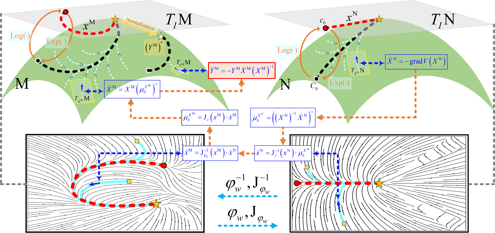

Principle of TADS in Lie-group space
Diffeomorphic mapping connects the learned trajectory-attractor dynamics with stable motion generation on $\mathrm{SE}(3)$.
A trajectory-attracting dynamical-system framework for stable SE(3) robot motion generation, disturbance recovery, and perception-conditioned replanning.
Dynamical-system (DS) imitation learning enables stable motion generation, but existing methods often provide only goal convergence, are commonly formulated in Euclidean spaces rather than directly on $\mathrm{SE}(3)$, and have limited perception-driven adaptability. This paper proposes an $\mathrm{SE}(3)$ DS learning framework integrating Trajectory-Attractor Dynamical Systems (TADS) and Conditional DS Generation (CDSG). TADS combines a canyon-shaped latent potential field with a diffeomorphic mapping on $\mathrm{SE}(3)$, yielding trajectory attraction, disturbance recovery, and almost global asymptotic stability under the principal-branch and unique nearest-canyon assumptions. Built on TADS, CDSG conditions the diffeomorphism on multimodal observations to generate task-consistent DSs online; for each fixed observation, the generated DS preserves the TADS stability property, enabling perception-driven replanning and trajectory switching. In real-robot peg-in-hole and bottle-cap assembly, TADS achieves $100\%$ success under all tested disturbance levels, with final position and orientation errors below $3.73~\mathrm{mm}$ and $1.54^\circ$, respectively; under strong disturbances, recovery times are $1.55~\mathrm{s}$ and $1.68~\mathrm{s}$, whereas non-TADS baselines drop to $44$--$72\%$ and $28$--$54\%$ success on the two tasks. In observation-conditioned tasks, CDSG achieves $100\%$ success over $50$ human--robot collaboration trials and $90\%$ over $20$ unseen moving-target positions.
Method

Diffeomorphic mapping connects the learned trajectory-attractor dynamics with stable motion generation on $\mathrm{SE}(3)$.

Multimodal observations condition the diffeomorphism so the robot can switch and replan online while preserving stability.
Experiments